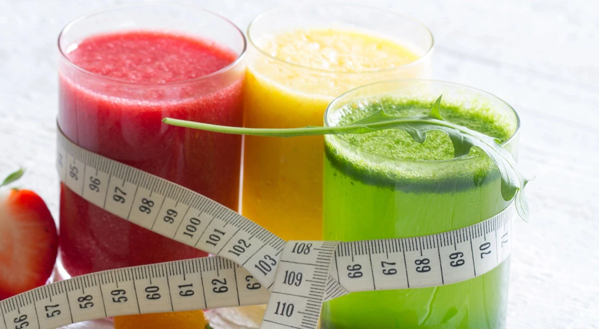

Warum nehme ich nicht ab? Wir beantworten alle deine Fragen rund ums Abnehmen

Es ist frustrierend, wenn du glaubst, dich richtig und gesund zu ernähren, du dich bewegst und Sport machst, und trotzdem keine Abnehmerfolge siehst. Dann taucht schnell die Frage auf: „Warum nehme ich nicht ab?“
Oft unterliegen diese Menschen Irrtümern und es fehlt ihnen an Wissen. Häufig wird auch vergessen, dass Abnehmen eine komplexe und individuelle Angelegenheit ist, die von vielen Faktoren beeinflusst wird.
Selbst bei einer ausgewogenen Ernährung kann es sein, dass dein Körper aufgrund von genetischen Veranlagungen, hormonellen Schwankungen oder anderen Gesundheitsfaktoren nicht so reagiert, wie du es dir wünschst. Es ist wichtig, deinen individuellen Ansatz und deine Diät zu überdenken und eventuell einen Experten zurate zu ziehen, um mögliche Ursachen zu identifizieren.
Warum nehme ich nicht ab, was mache ich falsch?
Lasse uns einmal die häufigsten Gründe und Irrtümer beleuchten, die dazu führen können, dass du Übergewicht hast oder du nicht abnehmen kannst, auch wenn du dich bemühst. In diesem Artikel möchten wir dir alle deine Fragen rund ums Abnehmen beantworten.
Ich esse doch schon „gesund“, warum nehme ich trotzdem nicht ab?
Zum Thema Ernährung gibt es unterschiedliche Punkte aufzuführen. Lass uns starten:
Falsche Einschätzung der richtigen Ernährung
Unsere tägliche Erfahrung als unabhängige FitLine Berater ist, dass Menschen ihre Ernährung meist selbst falsch einschätzen. Oft hören wir am Telefon: „Ich ernähre mich schon sehr gesund und habe alles umgestellt“. Wenn wir dann aber genau nachfragen, wie denn die Ernährung so über den Tag hinweg ist, müssen wir feststellen, dass diese in so gut wie 100 % aller Fälle eben nicht optimal ist. Somit ist es dann auch in aller Regel kein Wunder, dass es mit dem Abnehmen noch nicht so klappt, wie man es sich vorstellt.
Das ist kein Vorwurf, und du solltest dich deshalb nicht schlecht fühlen. Es zeigt einfach nur, dass es eine sehr große Bildungslücke zum Thema Ernährung in unserer Gesellschaft gibt. Woher sollst du auch wissen, wie du dich optimal ernährst, wenn du es weder von deinen Eltern noch in der Schule gelernt hast?
Das ist kein Problem, solange du die Bereitschaft hast, etwas dazuzulernen und deine Ernährung im Alltag wirklich zu verändern. Und, dass du uns einfach einmal dein Vertrauen schenkst und dir z. B. unser Programm zum Abnehmen mit FitLine holst. Denn hier werden alle wichtigen Punkte berücksichtigt und du lernst, wie du dich richtig ernährst.
Mahlzeiten auslassen und zu wenig essen
Einer der größten Fehler, den viele beim Abnehmen machen, ist das Auslassen von Mahlzeiten, oder, einfach nur noch ganz wenig zu essen. Z. B. mittags nur noch einen Salat zu essen, das Frühstück wegzulassen, und Ähnliches.
Viele denken, dass sie dadurch schneller Gewicht verlieren können, doch das Gegenteil ist der Fall. Wenn du Mahlzeiten auslässt, kann dein Körper in den "Sparmodus" wechseln und es wird schwieriger, Fett abzubauen.
Stattdessen ist es wichtig, regelmäßig, aber dabei das Richtige zu essen, um deinen Stoffwechsel aktiv zu halten.
Das falsche Essen
Dies geht eine ähnliche Richtung und betrifft häufig auch angepriesene Diäten. Oft wird, wenn etwas gegessen wird, dann auch noch das Falsche gegessen. Der Klassiker wäre: die Banane zum Frühstück oder als Snack am Nachmittag, der Salat zum Mittag (ohne etwas anderes dazu), und das Weißmehlbrötchen zum Abendessen. Auch wenn du über den Tag wenig zu dir nimmst, sind dies einfach die falschen Lebensmittel, was dann zu Problemen unterschiedlichster Art führt, aber leider nicht zu deiner Wunschfigur.
Sei sehr vorsichtig bei jeder Diät, die du irgendwo aufgeschnappt hast...
Im Ernährungsleitfaden unseres Abnehmprogramms hast du Listen mit den Lebensmitteln, die du essen solltest, und eine genaue Angabe, was du nicht essen solltest. Damit klappt der Fettabbau dann meist in kurzer Zeit wunderbar.
Esse ich vielleicht zu viel, ohne es zu bemerken?
Ein häufiges Problem ist das „unnötige Essen“, oft ohne es bewusst wahrzunehmen. Sei es das Naschen während des Kochens, das Zugreifen auf Snacks beim Fernsehen oder das Mitessen beim Essen mit Freunden: all diese kleinen Portionen summieren sich.
Achtsames Essen kann hier eine Lösung sein. Nimm dir Zeit für deine Mahlzeiten, kaufe bewusst ein und halte die Portionsgrößen im Auge. Das kann dir helfen, ein besseres Gefühl für deinen tatsächlichen Hunger zu entwickeln.
„Gesunde“ Ernährung, aber auch eine gute Diät, bedeuten nicht automatisch, unbegrenzt essen zu können. Auch bei nährstoffreichen Lebensmitteln können große Portionen dazu führen, dass du mehr Kalorien aufnimmst, als dein Körper benötigt. Dies verhindert dann das nötige Kaloriendefizit.
Eine gute Strategie ist es, kleinere Teller zu verwenden, um das Gefühl von Fülle zu erreichen, und sich bewusst zu machen, wann du satt bist. Experimentiere mit verschiedenen Portionen und achte darauf, wie dein Körper reagiert. Um anzunehmen, musst du trotz aller Regeln einer Diät in das Kaloriendefizit kommen.
Welchen Einfluss haben Alkohol, Wassermangel und Süßgetränke auf mein Abnehmen?
Wassermangel Alkohol kann einen erheblichen Einfluss auf deine Abnehmziele haben. Neben den Kalorien, die Alkohol selbst enthält, kann er auch das Verlangen nach ungesunden Lebensmitteln steigern und deine Hemmungen senken. Wenn du versuchst, Gewicht zu verlieren, überlege, deinen Alkoholkonsum zu reduzieren oder bewusster damit umzugehen.
Alternativen wie alkoholfreie Cocktails oder Wasser können ebenfalls ein guter Weg sein, um die Genussmomente zu bewahren, ohne das Kaloriendefizit negativ zu beeinflussen. Vorsicht bei solchen Alternativen wie einem alkoholfreien Bier, dies ist in der Regel ähnlich fatal wie die Versionen mit Alkohol.
Nicht selten nehmen Menschen zu und nicht ab, weil sie über Süßgetränke, Säfte und oft über Energy-Drinks hohe Mengen an Kalorien aufnehmen. Meide solche Getränke streng, wenn du abnehmen möchtest!
Wissenschaftlich belegt ist, dass Wassermangel dazu führen kann, dass du nicht optimal abnehmen kannst. Sehr häufig bekommen wir mit, dass Menschen mit stärkeren Problemen von Übergewicht auch massiv zu wenig Wasser trinken. Gewöhne dir eine neue Routine an mit täglich viel stillem Wasser. Trinke das nicht auf einmal, sondern über den Tag verteilt.
Gibt es spezielle Nährstoffe, die ich möglicherweise nicht genug bekomme?
Eine ausgewogene Ernährung ist entscheidend, um alle notwendigen Nährstoffe zu erhalten. Oft nehmen wir nicht genügend Vitamine, Mineralien und andere wichtige Nährstoffe auf. Manchmal sogar ohne es zu wissen. Eine Überprüfung deiner Ernährung und das Hinzufügen von nährstoffreichen Lebensmitteln kann helfen, Mängel auszugleichen. Häufig können auch hochqualitative Nahrungsergänzungsmittel zur Nährstoffoptimierung sinnvoll sein, um sicherzustellen, dass du alle wichtigen Mikronährstoffe in ausreichender Menge erhältst.
Eine durchgängige Einnahme von Nahrungsergänzung kann sich auch im Rahmen des Abnehmens als sehr wertvoll erweisen.
Wie kann man Heißhunger besser kontrollieren?
Heißhungerattacken können eine der größten Hürden beim Abnehmen sein, weil sie zu hoher Aufnahme von Kalorien führen und dein Kaloriendefizit ruinieren. Oft sind sie auf emotionale Faktoren, Ungleichgewichte in der Ernährung oder unregelmäßige Essenszeiten zurückzuführen. Um Heißhunger zu vermeiden, solltest du regelmäßige Mahlzeiten einplanen, die proteinreich sind und gesunde Fette enthalten, um lange satt zu bleiben. Besonders wichtig sind in der Ernährung, was das Fett betrifft, die Omega-3-Fettsäuren. Was die Eiweiße betrifft, sind besonders essentiellen Aminosäure von großer Bedeutung. Um deinen Eiweißanteil in der Ernährung zu erhöhen, kannst du auch Eiweißpulver wie Whey verwenden.
Unserer Erfahrung nach entsteht Heißhunger tatsächlich sehr oft einfach nur dadurch, weil den ganzen Tag über zu wenig gegessen, oder zu wenig Sättigendes gegessen wird. Lerne, regelmäßig viel Eiweiß ergänzt mit gutem Gemüse zu essen, und das Problem mit dem Heißhunger wird sich eventuell schnell erledigen.
Ein häufiges Problem kann die Versorgung mit Mikronährstoffen sein. Wenn dein Körper lebenswichtige Stoffe wie Vitamine und Mineralien nicht erhält, registriert dein Gehirn das und wird "Hunger" signalisieren. Du hast dann das Gefühl, einfach immer noch etwas mehr an Essen zu brauchen. Wenn dein Körper alle wichtigen Nährstoffe erhält, und das täglich und regelmäßig, verschwindet bei vielen Menschen innerhalb kurzer Zeit das Problem mit Gelüsten und Heißhunger.
Auch das Trinken von Wasser kann helfen, deinen Hunger zu zügeln und das Kaloriendefizit zu sichern. Wenn du plötzlich Lust auf etwas Süßes verspürst, versuche es zuerst mit einem Glas Wasser. Manchmal ist Durst nur schwer von Hunger zu unterscheiden.
Wenn du nach einer guten Nahrungsergänzung suchst, kannst du z. B. unser Optimal-Set mit dem weltweiten Bestseller PowerCocktail verwenden.
Was könnte mich beim Abnehmen blockieren?
Ein häufiges Hindernis beim Abnehmen ist die falsche Einstellung. Wenn du denkst, dass du auf alles verzichten musst, was dir Spaß macht, kann das schnell demotivieren. Stattdessen solltest du nach einer ausgewogenen Ernährung streben, die auch Platz für Leckereien lässt. Ein weiterer Blocker kann der Mangel an Unterstützung sein. Suche dir einen Partner oder eine Gruppe, die dich motiviert und dir hilft, deine Ziele zu erreichen.
Sind meine Erwartungen an den Gewichtsverlust realistisch?
Eine weitere ungünstige Einstellung ist eine falsche Erwartung, dass du in sehr kurzer Zeit viel abnehmen kannst. Wichtig ist, dass du dir viele Monate Zeit gibst, und deine Ernährung langfristig und konsequent verbesserst. Dann nimmst du automatisch über die Zeit mit Freude, Genuss, ohne zu hungern, und ganz ohne Stress ab.
Wir leben in einer Welt, die schnelle Ergebnisse propagiert, und es kann leicht passieren, dass man sich unrealistische Ziele setzt. Gewichtsverlust erfordert Zeit und Geduld. Es ist wichtig, realistische und nachhaltige Ziele zu setzen, die den individuellen Körper und Lebensstil berücksichtigen.
Statt nur auf ein bestimmtes Gewicht hinzuarbeiten, könnte es hilfreich sein, Fokus auf die Verbesserung der allgemeinen Fitness und Gesundheit zu legen. Kleine Erfolge auf dem Weg können motivierend sein und dir helfen, dauerhaft dranzubleiben.
Ist es möglich, dass Schlafmangel mein Abnehmen beeinträchtigt?
Auch Schlafmangel ist ein oft unterschätzter Faktor, der das Abnehmen erschweren kann. Hoher Stress erhöht das Cortisollevel im Körper, was wiederum zu Gewichtszunahme, besonders im Bauchbereich, führen kann. Ähnliches gilt für Schlafmangel:
Wenn du nicht ausreichend schläfst, kann sich dein Hungerhormon Ghrelin erhöhen, was zu Heißhungerattacken führen kann. Bewältigungstechniken gegen Stress wie Meditation, regelmäßige Bewegung und ausreichend Schlaf sind entscheidend, um deinem Körper die Ruhe zu geben, die er braucht.
Wenn du Sport treibst und dich viel bewegst, dient das übrigens auch wieder einem guten Schlaf.
Könnte es an meinem Stoffwechsel liegen?
Der Stoffwechsel spielt eine entscheidende Rolle beim Abnehmen. Einige Menschen haben einen aktiveren Stoffwechsel, während andere langsamer verbrennen. Wenn du das Gefühl hast, dass dein Stoffwechsel dir einen Strich durch die Rechnung macht, kann es hilfreich sein, deine Essgewohnheiten und Bewegung zu analysieren. Regelmäßigen Sport und Krafttraining können z. B. dabei helfen. Manchmal sind leichte Anpassungen nötig, um deinem Körper den nötigen Kick zu geben.
Wenn du innovative Ansätze suchst, könnten übrigens die beliebten TopShape¹ Kapseln eine interessante Idee für dich sein. Lass dich aber vorab unbedingt von uns beraten. (¹Biotin trägt zu einem normalen Makronährstoffwechsel bei und Zink trägt zu einem normalen Fettsäurestoffwechsel bei.)
Sollten meine Trainingseinheiten, Sport bzw. Bewegung geändert werden, um bessere Ergebnisse zu erzielen?
Wenn du beim Abnehmen stagnierst, könnte es an der Zeit sein, dein Training zu überdenken bzw. mehr Bewegung und Sport zu integrieren. Dies ist ein wichtiger Faktor, um dein Kaloriendefizit zu sichern.
Eine Kombination aus Kraft- und Ausdauertraining kann hilfreich sein, um verschiedene Muskelgruppen anzusprechen und den Stoffwechsel anzukurbeln.
Variiere deine Routine, um neue Reize zu setzen, und integriere unterschiedliche Trainingsarten wie HIIT, Yoga oder Pilates. Achte auch darauf, genügend Erholung zwischen den Einheiten einzuplanen, um deinem Körper die Chance zur Regeneration zu geben.
Können Probleme mit den Hormonen das Abnehmen verhindern?
Hormone sind entscheidend für viele Prozesse im Körper, einschließlich der Gewichtszunahme- und Abnahme. Bei manchen Menschen können Hormonungleichgewichte das Abnehmen erheblich erschweren. Beispielsweise Schilddrüsenerkrankungen, Insulinresistenz oder hormonelle Veränderungen durch das Alter. Dies kann dazu führen, dass du trotz Kaloriendefizit nicht abnimmst, oder sogar zunimmst.
Es ist ratsam, sich ärztlich untersuchen zu lassen, wenn du das Gefühl hast, dass deine Hormone eine Rolle spielen könnten. Ein Arzt kann dir helfen, mögliche Ungleichgewichte zu identifizieren und geeignete Schritte zur Regulierung vorzuschlagen.
Kann man mit viel Stress gut abnehmen?
Stresshormone, insbesondere Cortisol, haben einen erheblichen Einfluss auf unsere Fähigkeit, Fett abzubauen und ein optimales Gewicht zu halten. Wenn wir gestresst sind, produziert unser Körper vermehrt Cortisol, das als Reaktion auf Bedrohungen oder Herausforderungen freigesetzt wird. Dieses Hormon hat verschiedene Auswirkungen auf den Stoffwechsel und die Fettspeicherung.
Erstens kann ein erhöhter Cortisolspiegel zu einer gesteigerten Insulinproduktion führen, was wiederum die Speicherung von Fett begünstigt, insbesondere im Bauchbereich. Wenn Insulin chronisch hoch ist, wird der Körper weniger effizient darin, gespeichertes Fett zur Energiegewinnung zu nutzen, was den Fettabbau erschwert. Dann nimmst du trotz Kaloriendefizit nicht gut ab.
Zweitens beeinflusst Cortisol auch unseren Appetit. Hohe Cortisollevel können Heißhunger auf zuckerreiche und fettreiche Lebensmittel auslösen, was zu ungesunden Essgewohnheiten führt. Diese ständigen Gelüste machen es noch schwieriger, an einer kalorienreduzierten Ernährung festzuhalten und das Übergewicht erfolgreich zu reduzieren.
Darüber hinaus kann chronischer Stress auch die Schlafqualität beeinträchtigen. Schlechter Schlaf beeinträchtigt den Hormonhaushalt, insbesondere die Hormone Leptin und Ghrelin, die für die Regulierung des Hungergefühls verantwortlich sind. Ein Ungleichgewicht dieser Hormone kann dazu führen, dass man mehr Hunger hat und weniger gesättigt ist, was zu einer erhöhten Kalorienaufnahme führt.
Um den negativen Einfluss von Stresshormonen auf den Fettabbau zu minimieren, ist es wichtig, Stressbewältigungsstrategien zu entwickeln. Dies kann durch regelmäßige Bewegung, Achtsamkeitspraktiken wie Yoga oder Meditation sowie eine ausgewogene Ernährung geschehen. Indem du die hormonellen Herausforderungen in den Griff bekommst, schaffst du eine bessere Basis für deinen Abnehmerfolg und kannst deinem Ziel näherkommen!
Haben Wechseljahre und die Schilddrüse einen Einfluss aufs Abnehmen?
Besonders in den Wechseljahren erleben viele Frauen, aber auch Männer Hormonumstellungen, die den natürlichen Fettstoffwechsel beeinflussen und dazu führen können, dass das Gewicht an schwerer erreichbaren Stellen bleibt. Bei diesem Thema ist auch an Einflüsse durch Medikamente wie Verhütungsmittel zu denken, die sich nicht selten auf Gewicht und Übergewicht auswirken.
Schilddrüsenhormone sind besonders wichtig, denn sie regulieren den Grundumsatz: Ist die Schilddrüse unteraktiv, kann dies die Gewichtsreduktion stark einschränken.
Wenn du diese Zusammenhänge beachtest und gleichzeitig gezielt an einer optimalen Ernährung arbeitest, kannst du die hormonellen Herausforderungen besser meistern.
Für Menschen im Alter über 45 findest du in unserem Shop übrigens zwei Nahrungsergänzungsmittel, die das Thema Abnehmen zwar nicht betreffen, aber an die Bedürfnisse in dieser Lebensphase angepasst sind: Women+ Plus für Frauen und Men+ Plus für Männer.
Nehme ich nicht ab durch bestimmte Medikamente?
Wenn du dich fragst „Warum nehme ich nicht ab?“, wird oft übersehen, dass bestimmte Medikamente einen negativen Einfluss auf den Gewichtsverlust haben können.
Cortison ist ein Medikament, das häufig zur Behandlung von Entzündungen und Autoimmunerkrankungen eingesetzt wird. Es kann jedoch auch unerwünschte Nebenwirkungen mit sich bringen, die den Gewichtsverlust erschweren. Cortison kann den Appetit steigern und die Fettablagerung, insbesondere im Bauchbereich, begünstigen. Zudem kann es das Wassergewicht erhöhen, was temporär zu einer Zunahme auf der Waage führt.
Ein weiteres Beispiel sind einige Antidepressiva, wie beispielsweise Serotonin-Wiederaufnahme-Hemmer. Diese Medikamente können den Stoffwechsel beeinflussen und den Appetit erhöhen, was dazu führen kann, dass Menschen zunehmen oder gar Übergewicht bekommen. Besonders häufig berichten Nutzer von einer Zunahme von 2 bis 10 Kilogramm während der Behandlungsdauer.
Auch bestimmte Medikamente zur Behandlung von Diabetes, wie Insulin oder Sulfonylharnstoffe, können zu einer Gewichtszunahme führen, da sie den Blutzuckerspiegel regulieren und die Insulinempfindlichkeit erhöhen, was wiederum die Fettablagerung begünstigt.
Ebenso können einige Antipsychotika, wie Olanzapin oder Clozapin, eine drastische Veränderung des Appetits hervorrufen und dazu führen, dass Patienten unbeabsichtigt an Gewicht zunehmen.
Es ist daher entscheidend, sich bewusst zu machen, wie Medikamente den eigenen Körper und das Gewicht beeinflussen können. Wenn du Bedenken hinsichtlich der Auswirkungen von Medikamenten auf dein Gewicht hast, ist ein offenes Gespräch mit deinem Arzt unerlässlich.
Was ist der „Trick“, um erfolgreich abzunehmen?
Der Schlüssel zum erfolgreichen Abnehmen liegt in der Kombination aus optimaler Ernährung, regelmäßiger Bewegung bis gemäßigtem Sport und Durchhaltevermögen. Sofern du keine ernsthaften Probleme mit den Hormonen hast, oder dir Nebenwirkungen von Medikamenten einen Strich durch die Rechnung ziehen.
Die richtige Ernährung spielt tatsächlich die entscheidende Rolle, damit ist insbesondere nicht gemeint, weniger zu essen oder gar Mahlzeiten auszulassen, sondern, dich regelmäßig satt zu essen! Aber eben mit den richtigen Lebensmitteln!
Es kann dafür hilfreich sein, einmal eine gewisse Zeit ein Ernährungstagebuch zu führen, um ein besseres Bewusstsein für deine Essgewohnheiten zu entwickeln. Denke daran: Es geht nicht nur ums Abnehmen, sondern darum, sich auch insgesamt fitter und vitaler zu fühlen!
Was sollte man beim Abnehmen auf jeden Fall nicht machen?
Vermeide eine extreme Diät oder Trends, die versprechen, dass du in kurzer Zeit viel Gewicht verlierst, und vermeide es unbedingt, zu wenig zu essen und Mahlzeiten auszulassen! Diäten und Trends sind oft ungesund und nicht nachhaltig.
Auch das ständige Wiegen kann kontraproduktiv sein; konzentriere dich lieber auf das allgemeine Wohlbefinden und die Energie, die du durch gesunde Ernährung und Bewegung gewinnst. Setze dir realistische Ziele und feiere kleine Erfolge!
Wie kann ich motiviert bleiben, wenn zeitweise keine Fortschritte entstehen?
Motivation ist entscheidend beim Abnehmen, aber es ist normal, Phasen ohne Fortschritte zu erleben. Zeitweise Stagnation im Prozess gehört dazu und ist nicht immer gleich ein Zeichen, dass etwas nicht stimmt.
Um motiviert zu bleiben, setze dir Zwischenziele und feiere kleine Erfolge. Nutze eine Community bzw. einen Berater, mit dem du deine Fortschritte teilen kannst, und suche nach Inspiration in sozialen Medien oder durch Bücher. Denke daran, dass Abnehmen ein individueller Prozess ist und dass langfristige Änderungen oft mehr Zeit in Anspruch nehmen als schnelle Lösungen.
Wir, bzw. dein persönlicher Berater, steht dir während deines Abnehmprogramms permanent als Ansprechpartner zur Seite. Nutze gern gleich eine kostenlose Abnehmberatung, um dich individuell unterstützen zu lassen. In einem Gespräch erkennen wir meist sehr schnell, was bei dir die Probleme sein könnten, wenn du nicht abnimmst.
Wie kann man gute Gewohnheiten im Alltag integrieren, ohne viel Aufwand?
Gute Gewohnheiten in den Alltag zu integrieren, muss nicht kompliziert oder zeitaufwendig sein. Der Schlüssel liegt in kleinen, nachhaltigen Veränderungen, die sich leicht umsetzen lassen und trotzdem einen Einfluss auf das Thema Gewichtszunahme nehmen.
Beginne zum Beispiel mit dem Frühstück: Anstatt zu hasten, nimm dir ein paar Minuten Zeit für eine nährstoffreiche Mahlzeit, wie einen Smoothie oder Shake.
Plane deine Mahlzeiten im Voraus, sodass du gesunde Snacks zur Hand hast, die dich über den Tag bringen, ohne dass du in ungesunde Optionen greifst.
Du könntest auch kleine Bewegungspausen in deinen Arbeitsalltag einbauen, indem du während Telefonaten aufstehst oder kurze Spaziergänge in deine Mittagspause einplanst.
Fülle dein Zuhause mit guten Lebensmitteln und reduziere die Versuchungen, um den Fokus auf gesunde Ernährung zu halten.
Kleine Schritte, wie das Trinken von ausreichend Wasser oder das Auswählen von Treppen statt des Aufzuges, können ebenfalls große Unterschiede machen. Indem du diese gesunden Gewohnheiten spielerisch und ohne großen Aufwand in deinen Alltag einbaust, wirst du schnell merken, wie sie zu einer natürlichen Routine werden.